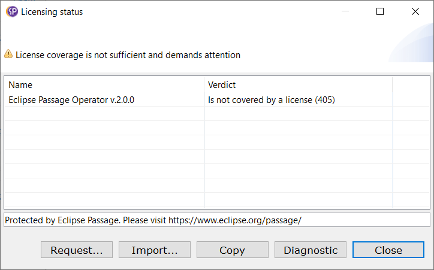

Passage Developer Guide
Integrate Passage
in your product's code base
Passage Developer Guide
Integrate Passage
in your product's code base
If the product itself must be protected - this is the first
feature named after the product.
If there are other
functionality, like, say, especially clever graphical editor or contact support team function, these are
features too.
Almost each of these actions are to be implemented on the product side.
Provide-Capability: licensing.feature;licensing.feature="my.company.product.support";version="1.4.8";name="Contact Support Team";level="error";provider="The Company"
Here is an example taken from Passage
Operator licensing declaration:
Provide-Capability: licensing.feature;licensing.feature="org.eclipse.passage.loc.operator.issue.personal";version="2.0.0";name="Issue Personal License";level="warn";provider="Eclipse Passage",
licensing.feature;licensing.feature="org.eclipse.passage.loc.operator.issue.floating";version="2.0.0";name="Issue Floating License";level="warn";provider="Eclipse Passage",
licensing.feature;licensing.feature="org.eclipse.passage.loc.operator.issue.personal.full";version="2.0.0";name="Issue full functioning Personal License";level="error";provider="Eclipse Passage",
licensing.feature;licensing.feature="org.eclipse.passage.loc.operator.issue.floating.full";version="2.0.0";name="Issue full functioning Floating License";level="error";provider="Eclipse Passage"
Passage does not make any difference between your bundles, your
licensing requirements will be located anyway.
But it's a
good practice to declare licensing requirements as a part of
functionality contract, in a sort of API
bundle for the corresponding functionality.
Now Passage knows exactly what parts of your product is to be protected and which licenses are proper.
Access Cycle is an invisible part of Passage that facilitates license checks on your product's runtime.
It is highly configurable, though the configuration is quite simple: your product's code base just need to supply an instance of Framework interface available through OSGi-component implementing FrameworkSupplier interface.
We have Demo Framework, which is configured with all the services implementations we have out of the box. You can also consult with the Operator Framework, which configures Access Cycle for our Passage Operator product.
There must be exactly one Framework supplied on runtime, other configurations are treated by Passage as sabotage.
Now in all key places in the product's code base you should check if there is sufficient license coverage and take proper actions it there isn't.
Each feature, been used, must acquire a license grant and then release it after the work is done.
The only piece of data you need to convey to Passage Access Cycle is identifier of a feature you demanded to protect.
There are two main interfaces, which facilitate license checks for client code: Passage and Passage UI with Equinox-based implementations Equinox Passage and Equinox Passage UI.
Simply put, the you should cover the feature invocation into acquire-release pair of appeals to Passage Access Cycle. Generally it looks like this:
String feature = "my.feature.identifier";
...
public void protectedFunctionalityIsRequested(){
ServiceInvocationResult<GrantLockAttempt> grant = new EquinoxPassage().acquireLicense(feature);
if(grantIsNotAcquired(grant)) {
handleFailure(grant.diagnostic());
return;
}
keepGrant(grant.data());
invokeProtectedFunctionality();
}
...
void protectedFunctionalityCompletedOrFailed() {
grant.ifPresent(new EquinoxPassage()::releaseLicense);
}
To avoid boilerplating this template among client's code, Passage supplies couple of handy units:
Passage Operator itself is a product licensed by Passage.
Consult
its source code:
check license on start of a product built on top of Eclipse Workbench
Having you've declared a licensing requirement for feature named after the product, use Passage Licensing Addon. It can be activated with the use of extension:
<extension
id="licensing"
point="org.eclipse.e4.workbench.model">
<processor
apply="always"
beforefragment="false"
class="org.eclipse.passage.lic.internal.e4.ui.addons.E4LicensingProcessor">
</processor>
</extension>
In case of insufficient license it'll expose standard Passage Licensing status dialog like it does for Passage Operator:

enable/disable GUI item depending on whether it's functionality is covered by a license or not
You can just aks Passage if the feature can potentially be used: no grant is to be acquired, so do not use the check for the final functionality protection.
public final class ProtectedAction extends org.eclipse.jface.action.Action {
private final String feature = "my.protected.feature.identifier";
...
@Override
public boolean isEnabled() {
return new EquinoxPassage().canUse(feature);
}
...
}
protect headless implementation of a feature
Use LicensedRunnable to let us do all the
license checks.
Just configure it's Default
with
public final class Invoke {
private final String feature = "a.feature.under.license.protection";
private final Logger log = LogManager.getLogger(getClass());
public void userCallsProtectedFunctionality() {
new LicensedRunnable.Default(feature, this::doTheWork, this::handleError);
}
private void doTheWork() {
// protected functionality here
}
private void handleError(ServiceInvocationResult<GrantLockAttempt> response) {
log.error(new DiagnosticExplained(response.diagnostic()));
}
}
Access Cycle is asked ones, and if access to the feature is granted, then the protected business-code is called, otherwise failure handle is invoked.
protect action with GUI available
Use LicensedRunnableUI extension of LicensedRunnable.
new LicensedRunnableUI(this::shell, feature, this::openWizard).run();
It gains either default Shell or the one from your particular gui context, and uses it to interact with the product's user.
If the feature is covered by a license properly, no interaction GUI elements are exposed.
If license coverage is not sufficient, then Licensing status dialog opens. It offers the user an opportunity to alter license coverage (import proper license) and rechecks it each time when the user does so.
Finally, either Passage is satisfied (the last of imported licenses worked) and your protected code is allowed to run, or, if license coverage has not been improved, configured denial handing code is invoked.
handle feature cannot be executed as it is not covered by a license case
Most appeals to Passage return an instance of Service Invocation Result. It offers rich Diagnostic.
You can expose it widely to the user with Diagnostic Dialog , if you can afford GUI, or log in some way using Diagnostic Explained string supplier.
These facilities gives the user enough information to find out the
reason of denial.
There are also sufficient data to trace
the logic and intermediate decisions.
If, for some
particular case, the diagnostic is not enough, please file
an issue for us to extend it.